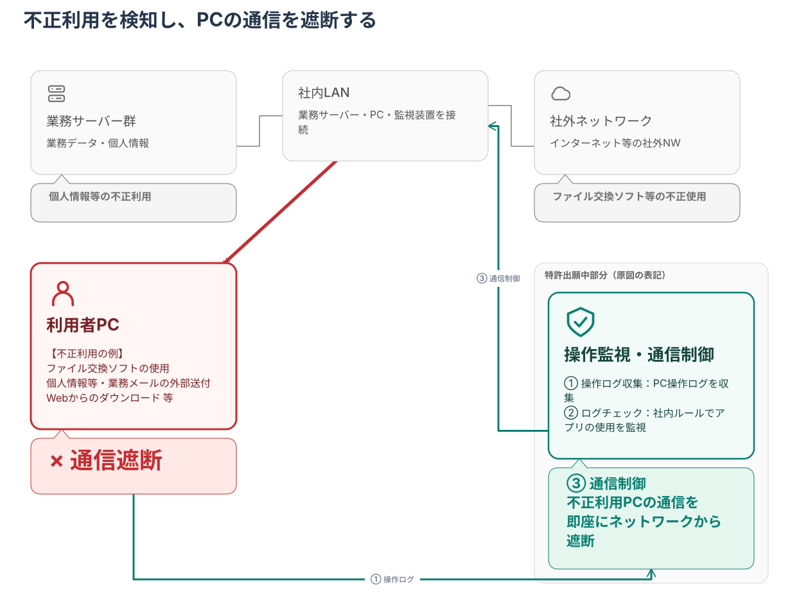
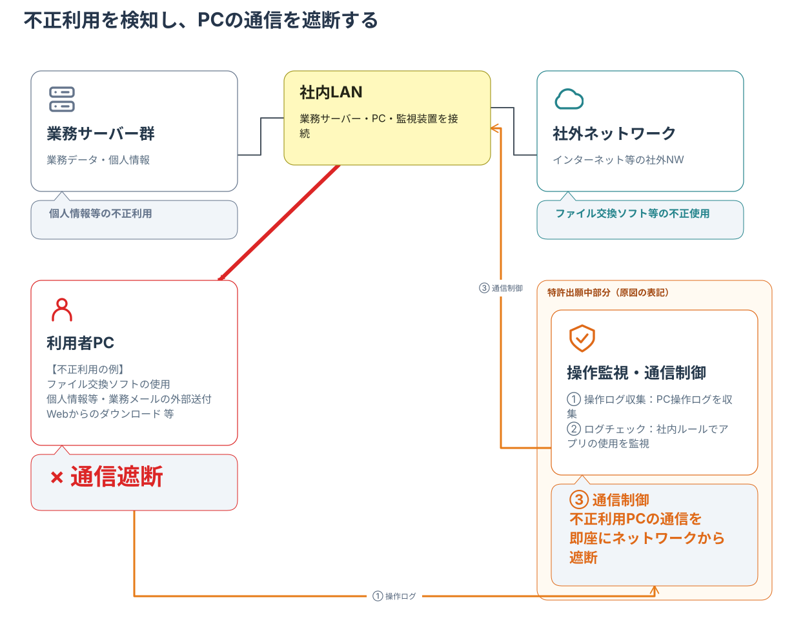

<!doctype html><html lang="ja"><meta charset="utf-8"><meta name="viewport" content="width=device-width,initial-scale=1"><title>重要度で読み分ける概略図</title><style>body{font:16px system-ui;background:#f4f4f4;color:#333;margin:30px}main{max-width:1500px;margin:auto}section{background:white;padding:20px;margin:20px 0;border-radius:12px}img{width:100%;height:auto}a{color:#087f72}</style><main><h1>周辺情報を抑え、問題と対策にフォーカス</h1><p>関係と本文を保ち、配色・文字・線幅の階層で重要度を示します。グレー：周辺情報／深緑：主役／赤：問題。</p><section><h2>調整後</h2><a href="security-overview.mmd">Mermaid</a> · <a href="security-overview.svg">SVG</a> · <a href="security-overview.png">PNG</a></section><section><h2>調整前</h2></section></main></html>